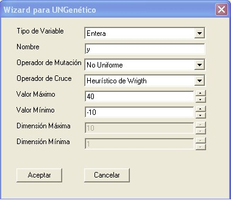

UNGenético Wizard es una aplicación diseñada con el fin de ayudar al usuario en la creación del archivo principal de un proyecto de UNGenético 2.0 donde se especifican las características más importantes del sistema a optimizar.
Las secciones de este tutorial describen el procedimiento de creación del archivo principal del proyecto de optimización para el
sistema propuesto utilizando
UNGenético Wizard.
UNGenético Wizard permite adicionar al modelo variables de los tipos que permite manejar la librería. La página Variables de la aplicación se especializa en esta labor. Al escoger la opción Adicionar se mostrará una ventana que permite especificar las caracterísitcas de las variables del sistema y relacionarlas con un gen, estas son:
-
Tipo de variable: especifica el tipo de variable del sistema. Puede ser bool, entera, real o arreglos de estos tipos.
-
Nombre: identifica a la variable del sistema.
-
Operador de mutación: define el operador de mutación para el gen relacionado con la variable.
-
Operador de cruce: define el operador de cruce para el gen relacionado con la variable.
-
Valor máximo: valor máximo permitido que puede tomar la variable.
-
Valor mínimo: valor mínimo permitido que puede tomar la variable.
-
Dimensión máxima: dimensión máxima que puede tomar el arreglo, sólo se puede establecer para variables de tipo arreglo.
-
Dimensión mínima:dimensión mínima que puede tomar el arreglo, sólo se puede establecer para variables de tipo arreglo.
La siguiente figura muestra las opciones establecidas para la variable
y del
sistema propuesto, para ella se ha escogido una variable de tipo
Entera cuyos valores se han restringido en el rango [-10, 40]; también se han escogido los operadores
No Uniforme y
Heurístico como operadores de mutación y cruce respectivamente para el gen relacionado con esta variable.

Al finalizar la adición para todas las variables del sistema, éstas quedarán almacenadas junto con todas sus propiedades en la página
Variables de la aplicación. La siguiente figura muestra la adición de las variables para el sistema planteado. Puede observarse que la definición de las propiedades es la misma que se realizó manualmente en la sección
Creación básica.
Con UNGenético Wizard también es posible definir los operadores genéticos que se implementarán en el proyecto de optimización. La página Operadores ofrece distintas posibilidades para este propósito.
Al activar la opción
Operadores por Defecto, el proyecto utilizará todos los operadores genéticos establecidos por defecto para la librería (ver
Operadores por defecto de UNGenético), incluyendo los operadores de cruce y mutación establecidos por defecto para cada tipo de gen; al desactivar esta opción, es posible escoger individualmente el operador genético que se desee utilizar en el proyecto. Para cada caso,
UNGenético Wizard mostrará todas las posibles opciones.
La siguiente figura muestra los operadores genéticos escogidos para el sistema tratado.
UNGenético Wizard permite modificar los parámetros del algoritmo genético que definen el número de individuos por generación y el número máximo de iteraciones del algoritmo; también permite establecer si se debe maximizar o minimizar la función objetivo. Esto es posible desde la página
Parámetros de la aplicación, si la opción
Parámetros por Defecto se encuentra activa, el proyecto utilizará los valores por defecto establecidos en la clase
AlgoritmoGenetico (ver
Valores por defecto de la clase AlgoritmoGenetico). En esta página también es posible seleccionar algunos parámetros propios de la librería como el nombre del archivo donde se almacenarán las medidas del desempeño del algoritmo y el intervalo de generaciones en que deben ser guardadas estas medidas.
La siguiente figura muestra la elección de parámetros para el sistema propuesto, en ella se han establecido 200 individuos por generación del algoritmo y un máximo de 200 iteraciones; también se ha escogido la opción Maximizar para encontrar el valor máximo de la función de evaluación.
El siguiente paso luego de definir las propiedades del proyecto de optimización es crear su archivo principal, esta acción se realiza mediante la opción Crear del menú Crear; al ejecutarse, la aplicación generará el código en lenguaje C++ del archivo principal del proyecto y lo mostrará en la página Archivo creado de la aplicación. Este código puede ser guardado en un archivo fuente de C++ (extensión .cpp) seleccionando la opción Guardar del menú Archivo.
Es importante resaltar que este código solamente contiene información básica acerca del proyecto, el usuario debe complementar y/o modificar este archivo con una función objetivo acorde a su problema a optimizar; si es necesario debe añadir las restricciones pertinentes y las instrucciones propias que se requieran.
Generado el Fri Apr 9 18:35:50 2004 para UNGenético por
 1.3.6
1.3.6